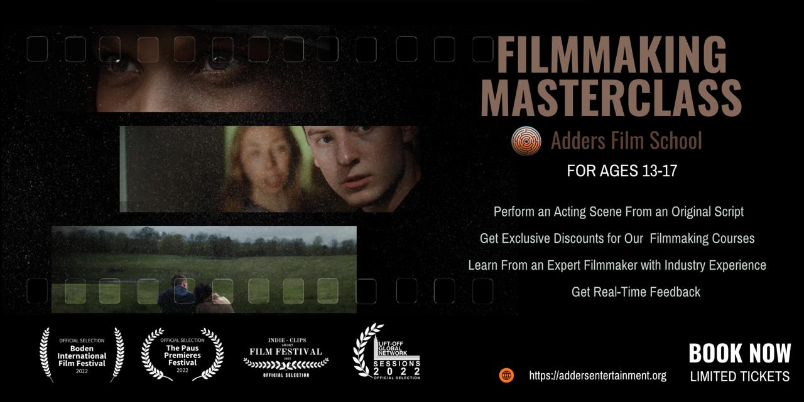
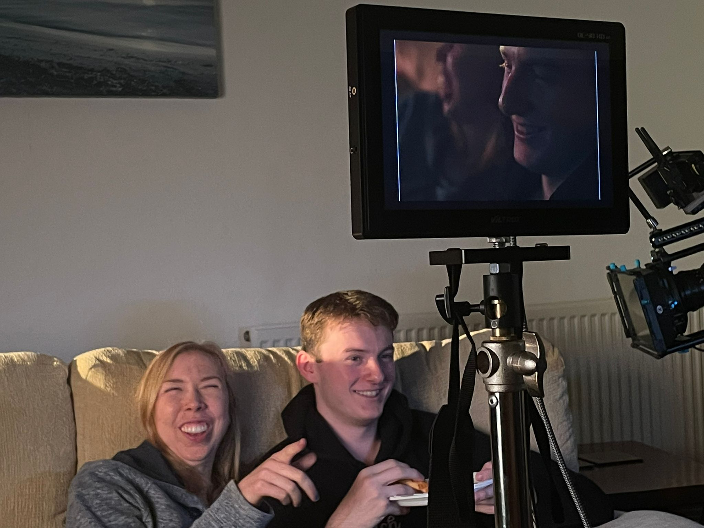
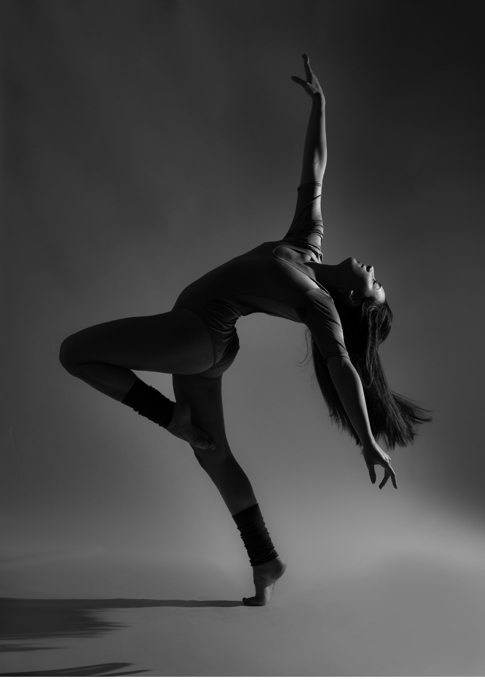
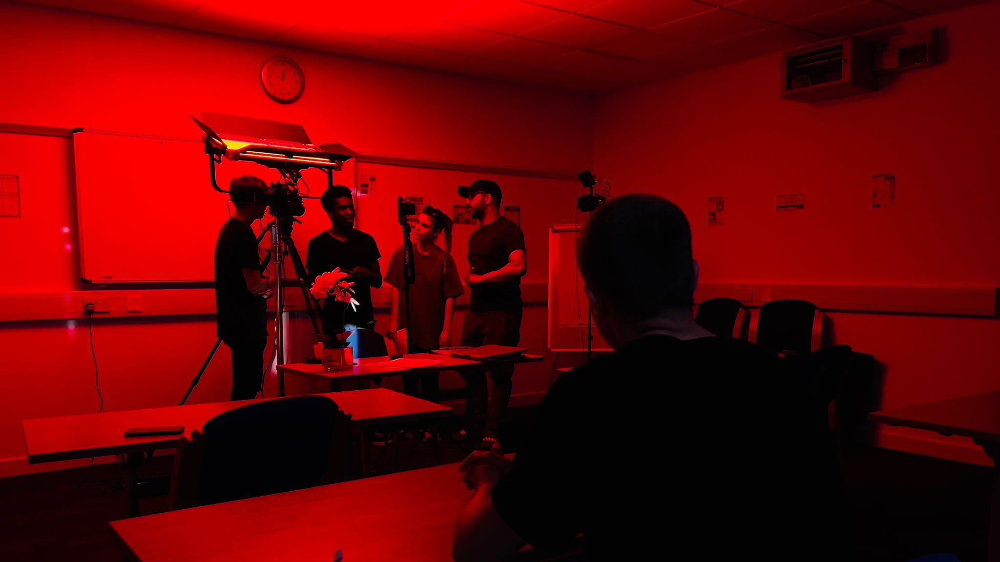

Adders Film School Showcase 2026
Step Into the Spotlight
Launch your performing arts career with the Adders Film School Showcase 2026. This is an incredible opportunity to work with the industry elite, perform backed by a live band, walk the red carpet, and broadcast your talent to a national audience.
Whether you're looking to get scouted, build an unbeatable showreel, or take your vocal and dance performance to the next level, this intensive showcase experience provides the ultimate professional platform. Open to performers aged 13–18.
What Makes This Experience Unforgettable?
National Live Broadcast & Red Carpet
Arrive in style with a full red carpet entrance and perform live for viewers across the nation, produced by a top-tier industry film and audio crew.
Live Band & Outdoor Stage
Experience the raw energy of singing and dancing on stage at the iconic Campbell Park Amphitheatre in Milton Keynes, backed by a professional live band.
Pro-Grade 4K HDR Showreel Footage
Every cast member receives a professionally recorded and edited 4K HDR film of their performance — the perfect asset for agency submissions, casting directors, and personal showreels.
World-Class Industry Training
Master high-energy vocal numbers and intricate choreography taught directly by leading West End and industry professionals.
The Audition Masterclass — Tuesday 25th August
This isn't a standard high-pressure audition. Our selection process is structured as an interactive Audition Masterclass, designed to give every participant actionable feedback, industry insights, and core performance skills to advance their training.
Star Judging Panel — present your audition piece to an elite panel, including guest star Stevi Ritchie (X Factor finalist & Celebrity Big Brother star), alongside leading industry veterans.
Exclusive Audition Perk — every performer who auditions, regardless of whether they make the final cast, receives an exclusive 10% discount on Premium Memberships at Adders Film School. (Discount valid for two weeks following the audition date.)
Key Dates & Event Schedule
- Tuesday 25th August — Audition Masterclass By age bracket — 13–14s: 10:00am–12:00pm · 15–16s: 12:30–2:30pm · 17–18s: 3:00–5:00pm
- Friday 28th August – Thursday 3rd September — Intensive Rehearsal Week (Vocal, Dance & Stage Blocking)
- Monday 31st August — Surprise Live Pop-Up Performance in Central Milton Keynes
- Saturday 5th September — Live Show Day at Campbell Park Amphitheatre (Red Carpet, Live Band & National Broadcast)
Open to performers aged 13–18. Spaces for the Audition Masterclass are strictly limited to ensure personal feedback for every participant — book your spot today and take the first step towards the big stage!
Pricing & Investment
Auditions run in sections by age:
- ✓13–14 · 10:00am – 12:00pm
- ✓15–16 · 12:30pm – 2:30pm
- ✓17–18 · 3:00pm – 5:00pm
Adders Film School
Master the craft. Find your voice. Become the professional you were meant to be!

Filmmaking & Acting Masterclass
Perform a scene from an original script, learn from an expert filmmaker with industry experience, and get real-time feedback — plus exclusive discounts on our courses.
Reserve Your Free Spot →Limited tickets available
Why Standard Film Academies Fall Short
(And How We Are Changing the Game)
When a young person is passionate about cinema, they don't just want to stand in front of a lens—they want to understand how magic is made. Unfortunately, many traditional youth film academies haven't updated their approach in a decade.
Too often, standard programs hand students outdated, consumer-grade cameras and treat the session like an after-school hobby club. Even worse, they skip the actual craft of filmmaking entirely—limiting their focus to basic camera framing and leaving students completely in the dark about scriptwriting, directing, editing, screen-specific musicals, and everything post-production.
I founded Adders Film School because we believe young creatives deserve better than a watered-down experience. We don't just make videos; we train the next generation of filmmakers.
The Reality vs. Adders Film School
Industry-Standard Technology
Filming on obsolete, low-resolution cameras that don't match today's industry.
The movie world has moved to cutting-edge cinema tech. Our curriculum is built around 12K camera systems, so students learn to produce stunning, cinematic 4K HDR final films on the same class of gear the industry actually uses.
The Complete Script-to-Screen Process
Limiting the experience to basic acting for camera or simply recording drama scenes.
Cinema is an ecosystem. We teach every aspect of the process. Our students won't just learn to hit record — they'll master every stage of the filmmaking journey.
Mastering the Post-Production Pipeline
Leaving students out of the editing room entirely, meaning they never learn how a story is actually put together.
A film is truly made in the edit. Our curriculum goes deep into post-production, editing, and sound design, giving students the tools to take their vision from a blank page all the way to the final cut.
Our Modules

Acting for Screen
Step into the spotlight and master the art of presence in ultra-high-definition. Training in a 12K production environment, every heartbeat, breath, and subtle facial expression becomes a storytelling tool. This module goes beyond traditional acting techniques to equip you with the raw, cinematic realism demanded by modern 4K HDR filmmaking.

Musical Theatre for Screen
Where Broadway meets the big screen. Learn how to translate live performance energy into compelling cinematic narratives. This module focuses on precision lip-syncing, movement for camera, and integrating high-fidelity audio with stunning 12K visuals—creating the next generation of musical storytelling.

Scriptwriting
Great films start with great stories. This module is built around WriterDuet, the industry-standard collaborative scriptwriting software. You'll learn to craft professional-grade scripts that not only tell a story but build one—from character development to dialogue and structure.

Cinematography & AudioVisual Production
Get hands-on with cutting-edge technology, training on the Blackmagic URSA Cine 12K LF. This module teaches you how to manipulate light, texture, and depth of field in 4K HDR, giving you the skills to create visually stunning productions that stand out.

Directing & Production Leadership
Learn what it takes to lead a production from start to finish. This isn't just about shouting "Action!"—it's about technical expertise, creative vision, and managing complex emotional beats. You'll gain the tools to lead your team, manage a high-end production, and bring your artistic vision to life.

Editing & Digital Mastering
This is where your film truly comes alive. This module is built around DaVinci Resolve Studio, covering advanced editing techniques including Fusion for visual effects, HDR grading, and audio mastering. You'll leave with the skills to finish your projects professionally—ready for the silver screen.

The Recording Suite: Vocal Edition
In our purpose-built recording suite, you'll learn how to capture exceptional vocal performances. From professional vocal training to advanced recording techniques, this module will equip you with the skills to produce high-quality recordings that showcase your unique voice and style.

Advanced Cinematography
Unleash your visual storytelling potential. This advanced course dives into the technical aspects of camera operation, lighting design, and visual composition. You'll gain the expertise needed to create cinematic masterpieces that captivate audiences and stand out in the industry.

Sketch to Screen
Unleash your creativity by learning the art of improvisation and devising original sketches. In this module, you'll develop your own ideas from concept to screen, creating short films that reflect your unique voice. Through hands-on workshops, you'll explore character development, dialogue writing, and on-camera performance, culminating in a final film project that showcases your storytelling skills.

Advanced Dance
Master the technical and artistic aspects of dance for screen. This module focuses on developing precision, artistry, and adaptability across various dance styles. You'll learn how to translate movement into cinematic narratives, working with choreographers and directors to create dynamic, visually compelling performances that enhance storytelling in film.

Cinematic Lighting
Learn how to use light as a narrative tool to shape mood, atmosphere, and meaning in film. This module explores both technical and creative approaches to lighting, from traditional methods to cutting-edge AI-assisted tools. You'll design lighting for multi-shot sequences, experimenting with physically based and stylised techniques to communicate emotion and intent through light.

Voice Acting & Foley Performance
Bring characters and scenes to life through sound. This module covers voice acting techniques, foley artistry, and audio layering to create immersive soundscapes that elevate your storytelling.